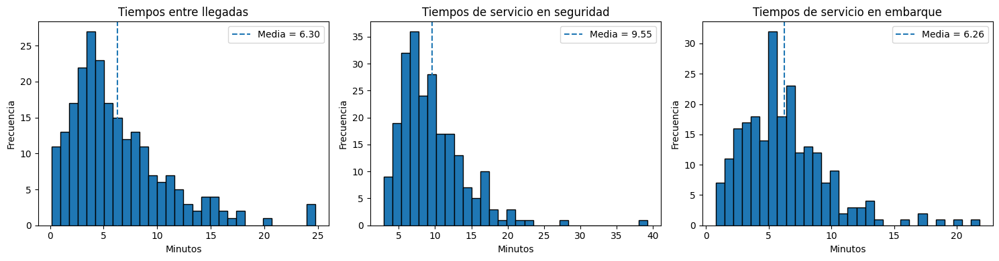
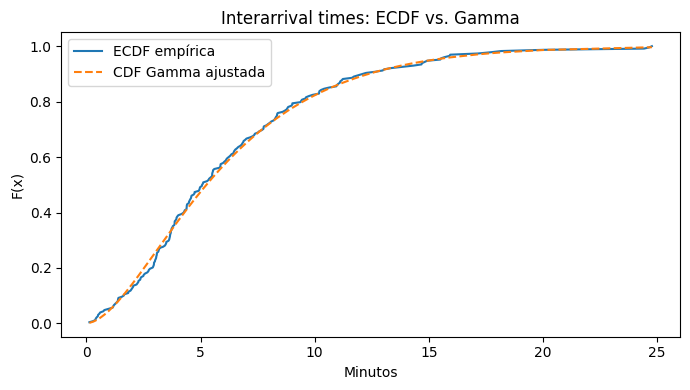
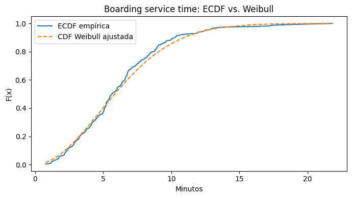

Complementaria Semana 12: Ajuste de distribuciones y uso en modelos estocásticos#
Objetivos de la sesión#
Al finalizar la sesión, el estudiante podrá:
Identificar distribuciones candidatas a partir del soporte y la forma de los datos.
Estimar parámetros de una distribución mediante máxima verosimilitud (MLE).
Evaluar si los datos son compatibles con una distribución propuesta mediante pruebas de bondad de ajuste.
Interpretar correctamente un p-value y un resultado de no rechazo.
Obtener medidas de variabilidad de una distribución ajustada.
Incorporar esa variabilidad en un modelo de colas y comparar el supuesto exponencial con un servicio más realista.
¿Cómo trabajar con esta complementaria?#
Este notebook está diseñado para que pueda utilizarse antes, durante y después de la clase.
Cada bloque sigue la misma secuencia:
Contexto: ¿qué problema estamos intentando resolver?
Concepto: ¿qué significa la herramienta que vamos a utilizar?
Implementación: ¿cómo se traduce el concepto a Python?
Lectura del resultado: ¿qué significa lo que acabamos de obtener?
Pregunta de control: ¿podemos explicar el resultado sin mirar el código?
Recomendación: no ejecute una celda inmediatamente. Primero lea la explicación que la precede e intente anticipar qué debería producir el código.
Convenciones utilizadas#
\(X\): variable aleatoria que representa una magnitud incierta.
\(x_1,\ldots,x_n\): observaciones de esa variable.
\(\hat{\theta}\): estimación de un parámetro.
\(H_0\): hipótesis nula.
\(\alpha=0.05\): nivel de significancia utilizado en las pruebas.
\(p\)-value: evidencia de los datos frente a \(H_0\).
\(\lambda\): tasa promedio de llegada.
\(\mu\): tasa promedio de servicio por servidor.
\(s\): número de servidores.
\(W_q\): tiempo esperado en cola.
\(C_s^2\): coeficiente de variación al cuadrado del tiempo de servicio.
Una distinción importante#
En esta sesión aparecen tres objetos diferentes:
Objeto |
Pregunta que responde |
|---|---|
Datos |
¿Qué observamos en el sistema real? |
Distribución ajustada |
¿Cómo podemos representar probabilísticamente esos datos? |
Modelo de colas |
¿Qué comportamiento del sistema podemos estudiar usando esa representación? |
La meta es conectar los tres, no tratarlos como ejercicios independientes.
0. Preparación#
Importa las librerías y carga los datos del aeropuerto antes de comenzar el análisis.
import pandas as pd
import numpy as np
import matplotlib.pyplot as plt
from scipy import stats
from math import factorial
# Cargar la base de datos del aeropuerto
df = pd.read_excel("Datos_Aeropuerto.xlsx")
# Calcular el tiempo entre llegadas a partir de los tiempos de llegada
df["interarrival_calc"] = df["arrival_time_min"].diff()
# El primer registro no tiene un tiempo entre llegadas
df = df.dropna(subset=["interarrival_calc"])
df.head()
| arrival_time_min | security_service_time_min | boarding_service_time_min | waiting_time_min | passengers_per_flight | crew_members | ticket_price_net_cop | interarrival_calc | |
|---|---|---|---|---|---|---|---|---|
| 1 | 4.820359 | 12.244948 | 2.102177 | 11.617771 | 148 | 6 | 69487 | 1.312942 |
| 2 | 11.126747 | 6.360328 | 2.172213 | 0.332360 | 162 | 2 | 211375 | 6.306387 |
| 3 | 16.075663 | 11.399622 | 4.249288 | 10.496268 | 152 | 7 | -35722 | 4.948916 |
| 4 | 29.054235 | 5.213556 | 8.799984 | 1.282438 | 152 | 5 | 132610 | 12.978572 |
| 5 | 35.300152 | 12.500512 | 5.214301 | 6.706093 | 131 | 2 | 359075 | 6.245917 |
1. Caso de estudio: operación de un aeropuerto#
Consideramos un sistema de pasajeros que pasa por diferentes etapas de procesamiento.
En esta complementaria nos concentraremos en tres variables de entrada:
Tiempo entre llegadas (
interarrival)Tiempo de servicio en seguridad (
security_service_time_min)Tiempo de servicio en embarque (
boarding_service_time_min)
La pregunta no es solamente “¿qué distribución tienen los datos?”, sino:
¿Cómo podemos utilizar los datos observados para representar la incertidumbre del sistema?
Más adelante veremos que la distribución ajustada de los tiempos de servicio afecta directamente las métricas de una cola.
Variables que utilizaremos#
Estas variables son inputs del modelo. No ajustaremos una distribución al tiempo de espera porque este será una salida del modelo de colas.
# Variables estocásticas de interés
x_inter = df["interarrival_calc"] # Tiempo entre llegadas
x_sec = df["security_service_time_min"] # Servicio en seguridad
x_board = df["boarding_service_time_min"] # Servicio en embarque
variables = {
"Interarrival (min)": x_inter,
"Security service (min)": x_sec,
"Boarding service (min)": x_board,
}
resumen = pd.DataFrame({
nombre: {
"n": len(v),
"media": v.mean(),
"std": v.std(),
"min": v.min(),
"p25": v.quantile(0.25),
"mediana": v.median(),
"p75": v.quantile(0.75),
"max": v.max(),
"CV": v.std() / v.mean(),
"asimetría": v.skew(),
}
for nombre, v in variables.items()
}).T
print(resumen.to_string())
n media std min p25 mediana p75 max CV asimetría
Interarrival (min) 228.0 6.297868 4.547734 0.130257 3.089453 5.085456 8.352401 24.774471 0.722107 1.441815
Security service (min) 228.0 9.554548 4.632227 2.882069 6.334166 8.512796 11.771274 39.321554 0.484819 1.971294
Boarding service (min) 228.0 6.259507 3.458893 0.779489 3.790580 5.664584 8.057528 21.826437 0.552582 1.339351
2. Exploración de los datos#
Antes de ajustar una distribución teórica, preguntamos:
¿Cuál es el soporte de la variable?
¿La distribución parece simétrica o asimétrica?
¿Hay una cola derecha importante?
¿Qué distribuciones podrían representar razonablemente esa forma?
La exploración no demuestra qué distribución siguen los datos. Solo nos ayuda a plantear candidatos.
# Histogramas de las tres variables de entrada
datos = [
(x_inter, "Tiempos entre llegadas", "Minutos"),
(x_sec, "Tiempos de servicio en seguridad", "Minutos"),
(x_board, "Tiempos de servicio en embarque", "Minutos"),
]
fig, axes = plt.subplots(1, 3, figsize=(15, 4))
for ax, (serie, titulo, xlabel) in zip(axes, datos):
ax.hist(serie, bins=30, edgecolor="black")
ax.set_title(titulo)
ax.set_xlabel(xlabel)
ax.set_ylabel("Frecuencia")
ax.axvline(serie.mean(), linestyle="--", label=f"Media = {serie.mean():.2f}")
ax.legend()
plt.tight_layout()
plt.show()

¿Qué observamos?#
Los tiempos son positivos y presentan, en general, asimetría hacia la derecha. Esto hace razonable considerar distribuciones continuas con soporte positivo.
Para esta sesión utilizaremos:
Variable |
Distribución candidata |
¿Por qué? |
|---|---|---|
Interarrival |
Gamma |
Positiva y flexible para representar asimetría |
Seguridad |
Lognormal |
Positiva y con posible cola derecha |
Embarque |
Weibull |
Positiva y flexible para tiempos de servicio |
Antes de usar .fit(): ¿qué estamos haciendo?#
Suponga que tenemos observaciones \(x_1,\ldots,x_n\) y proponemos una distribución con parámetro \(\theta\).
La verosimilitud es
La máxima verosimilitud busca el valor de \(\theta\) que maximiza esa expresión:
No necesitamos resolver esta optimización manualmente en esta sesión. scipy.stats implementa el procedimiento numérico mediante .fit().
Lo importante es entender qué entra y qué sale:
Por ejemplo, si usamos una Weibull:
c_hat, loc_hat, scale_hat = stats.weibull_min.fit(x_board, floc=0)
estamos estimando los parámetros de la Weibull que hacen más plausibles los datos observados bajo ese modelo.
3. Ajuste por máxima verosimilitud#
Una vez elegida una distribución candidata, necesitamos estimar sus parámetros.
Máxima verosimilitud (MLE)#
La idea es escoger los parámetros que hacen que los datos observados sean lo más plausibles posible bajo el modelo.
En términos generales:
En scipy.stats, muchas distribuciones tienen un método .fit() que realiza esta estimación.
Patrón que queremos aprender:
datos → distribución.fit(datos) → parámetros estimados.
3.1 Interarrival times → Gamma#
La Gamma es una distribución continua con soporte positivo. En scipy, se parametriza mediante:
a: parámetro de formaloc: desplazamientoscale: escala
En este caso observaremos también el valor estimado de la media teórica y lo compararemos con la media empírica.
¿Por qué Gamma?#
Los tiempos entre llegadas son variables continuas y positivas. Por tanto, una primera condición para una distribución candidata es que su soporte sea compatible con los datos.
La Gamma tiene soporte:
Además, su forma puede adaptarse a diferentes niveles de asimetría.
No estamos afirmando que los datos “sean Gamma” solo por observar el histograma. Gamma es una hipótesis de modelación que después debemos evaluar.
# MLE para Gamma
a_hat, loc_hat, scale_hat = stats.gamma.fit(x_inter)
print("=== Ajuste Gamma — Interarrival times ===")
print(f"Parámetro de forma a = {a_hat:.4f}")
print(f"Parámetro loc = {loc_hat:.4f}")
print(f"Parámetro de escala = {scale_hat:.4f}")
print(f"Media teórica = {a_hat * scale_hat:.4f} min")
print(f"Media empírica = {x_inter.mean():.4f} min")
params_inter = (a_hat, loc_hat, scale_hat)
=== Ajuste Gamma — Interarrival times ===
Parámetro de forma a = 1.9619
Parámetro loc = -0.0634
Parámetro de escala = 3.2423
Media teórica = 6.3612 min
Media empírica = 6.2979 min
Interpretación#
El ajuste no termina al obtener tres números. Debemos preguntarnos:
¿los parámetros producen una distribución compatible con la forma observada?
¿la media teórica es razonablemente cercana a la media de los datos?
¿el ajuste será suficientemente bueno para usarlo en el modelo?
Estas preguntas las responderemos en la siguiente sección mediante bondad de ajuste.
3.2 Security service time → Lognormal#
Si \(X\) sigue una Lognormal, entonces:
sigue una Normal.
Esto nos da dos formas complementarias de pensar el ajuste:
ajustar directamente una Lognormal a \(X\);
verificar si \(\ln(X)\) es compatible con una Normal.
¿Por qué aparece el logaritmo?#
La Lognormal tiene una interpretación especialmente útil:
Por eso, si los tiempos son positivos y tienen una cola derecha, podemos estudiar si su logaritmo tiene una forma aproximadamente Normal.
Además, para una Lognormal:
Esto permite conectar los parámetros del modelo con medidas que podemos interpretar en las unidades originales: minutos.
# MLE para Lognormal
s_hat, loc_hat_ln, scale_hat_ln = stats.lognorm.fit(x_sec)
mu_ln = np.log(scale_hat_ln)
sig_ln = s_hat
print("=== Ajuste Lognormal — Security service time ===")
print(f"σ (std del log) = {sig_ln:.4f}")
print(f"μ (media del log) = {mu_ln:.4f}")
print(f"loc = {loc_hat_ln:.4f}")
print(f"Media teórica E[X] = {np.exp(mu_ln + sig_ln**2 / 2):.4f} min")
print(f"Media empírica = {x_sec.mean():.4f} min")
params_sec = (s_hat, loc_hat_ln, scale_hat_ln)
=== Ajuste Lognormal — Security service time ===
σ (std del log) = 0.4780
μ (media del log) = 2.0762
loc = 0.6093
Media teórica E[X] = 8.9387 min
Media empírica = 9.5545 min
3.3 Boarding service time → Weibull#
Para el tiempo de servicio en embarque utilizaremos una Weibull con loc=0.
Su parámetro de forma permite representar diferentes patrones de comportamiento del tiempo de servicio.
¿Por qué Weibull?#
La Weibull también tiene soporte positivo:
Su parámetro de forma permite representar distintas formas de distribución de tiempos de servicio.
En este caso fijamos loc=0:
stats.weibull_min.fit(x_board, floc=0)
Esto hace explícito que estamos modelando el tiempo de servicio desde cero, sin introducir un desplazamiento adicional.
No confunda:
c: forma;scale: escala;loc: desplazamiento.
En el modelo que construiremos después nos interesan especialmente la media y la variabilidad que produce esta distribución.
# MLE para Weibull, fijando loc=0
c_hat, loc_hat_wb, scale_hat_wb = stats.weibull_min.fit(
x_board, floc=0
)
print("=== Ajuste Weibull — Boarding service time ===")
print(f"Parámetro de forma c = {c_hat:.4f}")
print(f"loc = {loc_hat_wb:.4f}")
print(f"Escala = {scale_hat_wb:.4f}")
print(
f"Media teórica E[X] = "
f"{stats.weibull_min.mean(c_hat, loc=0, scale=scale_hat_wb):.4f} min"
)
print(f"Media empírica = {x_board.mean():.4f} min")
params_board = (c_hat, loc_hat_wb, scale_hat_wb)
=== Ajuste Weibull — Boarding service time ===
Parámetro de forma c = 1.9223
loc = 0.0000
Escala = 7.0784
Media teórica E[X] = 6.2789 min
Media empírica = 6.2595 min
Mini-pausa conceptual#
Hasta ahora hemos hecho:
Pero un buen ajuste de parámetros no implica automáticamente que la distribución sea adecuada.
Ahora debemos responder:
¿Los datos son compatibles con la distribución que escogimos?
¿Por qué validar después de ajustar?#
MLE responde:
¿Cuáles son los mejores parámetros si asumimos que esta distribución es el modelo?
Pero todavía falta responder:
¿Es razonable asumir esta distribución para estos datos?
Son preguntas diferentes.
Por eso la secuencia correcta es:
Una prueba de bondad de ajuste no “encuentra” automáticamente la distribución correcta. Evalúa una distribución que nosotros ya propusimos.
4. Validación del ajuste#
Utilizaremos pruebas de bondad de ajuste.
Kolmogórov–Smirnov (KS)#
La prueba KS compara la distribución empírica con la distribución teórica propuesta.
La hipótesis nula es, conceptualmente:
Trabajaremos con:
Regla de decisión#
Si \(p<0.05\): rechazamos \(H_0\).
Si \(p\geq0.05\): no rechazamos \(H_0\).
Importante: no rechazar \(H_0\) no significa demostrar que la distribución es verdadera. Significa que no encontramos evidencia suficiente para considerarla incompatible con los datos.
4.1 Interarrival times — Gamma#
Primero evaluamos el ajuste que hicimos para los tiempos entre llegadas.
alpha = 0.05
ks_inter = stats.kstest(
x_inter,
"gamma",
args=params_inter
)
print("=== KS — Interarrival time ~ Gamma ===")
print(f"Estadístico D = {ks_inter.statistic:.4f}")
print(f"p-value = {ks_inter.pvalue:.4f}")
if ks_inter.pvalue >= alpha:
print("Decisión: no se rechaza H0.")
print("Conclusión: los datos son compatibles con la Gamma ajustada.")
else:
print("Decisión: se rechaza H0.")
print("Conclusión: los datos presentan evidencia de incompatibilidad con la Gamma ajustada.")
=== KS — Interarrival time ~ Gamma ===
Estadístico D = 0.0463
p-value = 0.6947
Decisión: no se rechaza H0.
Conclusión: los datos son compatibles con la Gamma ajustada.
# Comparación visual: ECDF vs. CDF teórica
x_sorted = np.sort(x_inter)
ecdf = np.arange(1, len(x_sorted) + 1) / len(x_sorted)
cdf_gamma = stats.gamma.cdf(x_sorted, *params_inter)
plt.figure(figsize=(7, 4))
plt.plot(x_sorted, ecdf, label="ECDF empírica")
plt.plot(x_sorted, cdf_gamma, "--", label="CDF Gamma ajustada")
plt.title("Interarrival times: ECDF vs. Gamma")
plt.xlabel("Minutos")
plt.ylabel("F(x)")
plt.legend()
plt.tight_layout()
plt.show()

4.2 Security service time — Lognormal#
Para evaluar la Lognormal utilizaremos la transformación:
y aplicaremos Anderson–Darling para evaluar normalidad de \(Z\).
AD da mayor peso a las colas que KS, lo cual resulta útil cuando los valores extremos pueden ser relevantes para el comportamiento del sistema.
¿Por qué Anderson–Darling?#
KS y Anderson–Darling son pruebas de bondad de ajuste, pero no ponderan las discrepancias exactamente de la misma manera.
Anderson–Darling presta especial atención a las colas de la distribución. Esto puede ser relevante en tiempos de servicio porque valores extremos pueden tener consecuencias operativas importantes.
En esta sección aplicamos AD a \(\ln(X)\) porque la hipótesis de Lognormalidad implica que \(\ln(X)\) debería ser Normal.
Para AD no recibimos directamente un único p-value en esta implementación. Comparamos el estadístico con el valor crítico correspondiente al nivel de significancia elegido.
# Anderson-Darling sobre log(X)
x_logn_pos = x_sec[x_sec > 0]
z = np.log(x_logn_pos)
ad_logn = stats.anderson(z, dist="norm")
print("=== AD — Security service time ~ Lognormal ===")
print(f"Estadístico AD = {ad_logn.statistic:.4f}")
print("Valores críticos:")
for nivel, cv in zip(
ad_logn.significance_level,
ad_logn.critical_values
):
print(f" {nivel}%: {cv:.4f}")
cv_5 = ad_logn.critical_values[2]
if ad_logn.statistic < cv_5:
print("\nDecisión al 5%: no se rechaza H0.")
print("Conclusión: log(X) es compatible con una Normal;")
print("por tanto, X es compatible con una Lognormal.")
else:
print("\nDecisión al 5%: se rechaza H0.")
print("Conclusión: hay evidencia de que log(X) no es Normal.")
=== AD — Security service time ~ Lognormal ===
Estadístico AD = 0.2072
Valores críticos:
15.0%: 0.5590
10.0%: 0.6290
5.0%: 0.7500
2.5%: 0.8700
1.0%: 1.0320
Decisión al 5%: no se rechaza H0.
Conclusión: log(X) es compatible con una Normal;
por tanto, X es compatible con una Lognormal.
/tmp/ipykernel_2419/2016789273.py:5: FutureWarning: As of SciPy 1.17, users must choose a p-value calculation method by providing the `method` parameter. `method='interpolate'` interpolates the p-value from pre-calculated tables; `method` may also be an instance of `MonteCarloMethod` to approximate the p-value via Monte Carlo simulation. When `method` is specified, the result object will include a `pvalue` attribute and not attributes `critical_value`, `significance_level`, or `fit_result`. Beginning in 1.19.0, these other attributes will no longer be available, and a p-value will always be computed according to one of the available `method` options.
ad_logn = stats.anderson(z, dist="norm")
Comparación: ¿por qué importa elegir la distribución?#
Podemos contrastar la Lognormal con una Normal aplicada directamente a los tiempos de seguridad.
Esto es un diagnóstico, no una nueva propuesta de modelo.
# Contraste adicional: Normal directa sobre los tiempos de seguridad
mu_norm_sec, sig_norm_sec = stats.norm.fit(x_sec)
ks_sec_norm = stats.kstest(
x_sec,
"norm",
args=(mu_norm_sec, sig_norm_sec)
)
print("=== KS — Security service time ~ Normal ===")
print(f"Estadístico D = {ks_sec_norm.statistic:.4f}")
print(f"p-value = {ks_sec_norm.pvalue:.4f}")
if ks_sec_norm.pvalue < alpha:
print("Se rechaza el ajuste Normal al 5%.")
else:
print("No se rechaza el ajuste Normal al 5%.")
=== KS — Security service time ~ Normal ===
Estadístico D = 0.1254
p-value = 0.0014
Se rechaza el ajuste Normal al 5%.
4.3 Boarding service time — Weibull#
Finalmente validamos la Weibull que utilizaremos después en el modelo de colas.
ks_board = stats.kstest(
x_board,
"weibull_min",
args=params_board
)
print("=== KS — Boarding service time ~ Weibull ===")
print(f"Estadístico D = {ks_board.statistic:.4f}")
print(f"p-value = {ks_board.pvalue:.4f}")
if ks_board.pvalue >= alpha:
print("Decisión: no se rechaza H0.")
print("Conclusión: los datos son compatibles con la Weibull ajustada.")
else:
print("Decisión: se rechaza H0.")
print("Conclusión: los datos presentan evidencia de incompatibilidad con la Weibull ajustada.")
=== KS — Boarding service time ~ Weibull ===
Estadístico D = 0.0569
p-value = 0.4365
Decisión: no se rechaza H0.
Conclusión: los datos son compatibles con la Weibull ajustada.
# Comparación visual: ECDF vs. CDF Weibull
x_sorted_b = np.sort(x_board)
ecdf_b = np.arange(1, len(x_sorted_b) + 1) / len(x_sorted_b)
cdf_wb = stats.weibull_min.cdf(
x_sorted_b,
*params_board
)
plt.figure(figsize=(7, 4))
plt.plot(x_sorted_b, ecdf_b, label="ECDF empírica")
plt.plot(x_sorted_b, cdf_wb, "--", label="CDF Weibull ajustada")
plt.title("Boarding service time: ECDF vs. Weibull")
plt.xlabel("Minutos")
plt.ylabel("F(x)")
plt.legend()
plt.tight_layout()
plt.show()

¿Qué debemos llevarnos de esta sección?#
La validación combina evidencia estadística y visual:
Una distribución es útil para modelar cuando resulta razonablemente compatible con los datos y tiene sentido para el sistema que estamos representando.
5. Del ajuste al modelo de colas#
Ahora viene la conexión principal de la complementaria.
No ajustamos distribuciones solamente para describir datos.
Las usamos para representar inputs de un sistema estocástico.
Nos concentraremos en el sistema de embarque con 2 servidores.
Primero construiremos un modelo:
y después modificaremos el supuesto de servicio:
donde \(G\) será la Weibull ajustada a los datos.
Recordatorio: ¿qué significa M/M/2?#
La notación de Kendall:
se interpreta como:
primera M: llegadas Markovianas, usualmente un proceso de Poisson;
segunda M: tiempos de servicio exponenciales;
2: dos servidores.
Por tanto, cuando calculamos un M/M/2 estamos haciendo un supuesto sobre la forma completa de los tiempos de servicio, no solamente sobre su media.
Ese supuesto es precisamente lo que vamos a cuestionar después con los datos.
5.1 Modelo M/M/2#
Para el modelo M/M/2 necesitamos:
tasa de llegada \(\lambda\);
tasa de servicio \(\mu\) por servidor;
número de servidores \(s=2\).
Estimamos:
La utilización por servidor es:
El sistema es estable cuando:
from math import factorial
# Parámetros del sistema M/M/2
lam = 1 / np.mean(x_inter)
ES = np.mean(x_board)
mu = 1 / ES
s = 2
rho_s = lam / (s * mu)
print("=== Parámetros del sistema M/M/2 ===")
print(f"λ (llegadas/min) = {lam:.6f}")
print(f"μ (servicios/min/servidor)= {mu:.6f}")
print(f"s (servidores) = {s}")
print(f"ρ_s = {rho_s:.4f}")
if rho_s >= 1:
print("El sistema es inestable.")
else:
a = lam / mu
sum1 = sum(
(a**j) / factorial(j)
for j in range(s)
)
sum2 = (
(a**s)
/ (factorial(s) * (1 - rho_s))
)
pi0 = 1 / (sum1 + sum2)
# Probabilidad de que un pasajero tenga que esperar
P_wait = (
(a**s)
/ (factorial(s) * (1 - rho_s))
* pi0
)
Lq = P_wait * rho_s / (1 - rho_s)
Ls = lam / mu
L = Lq + Ls
Wq_mm2 = Lq / lam
W_mm2 = L / lam
print("\n=== Resultados M/M/2 ===")
print(f"π₀ = {pi0:.4f}")
print(f"P(espera) = {P_wait:.4f}")
print(f"Lq = {Lq:.4f}")
print(f"L = {L:.4f}")
print(f"Wq = {Wq_mm2:.4f} min")
print(f"W = {W_mm2:.4f} min")
=== Parámetros del sistema M/M/2 ===
λ (llegadas/min) = 0.158784
μ (servicios/min/servidor)= 0.159757
s (servidores) = 2
ρ_s = 0.4970
=== Resultados M/M/2 ===
π₀ = 0.3360
P(espera) = 0.3300
Lq = 0.3260
L = 1.3199
Wq = 2.0529 min
W = 8.3124 min
Interpretación#
El M/M/2 es un modelo exacto bajo el supuesto exponencial de los tiempos de servicio.
Pero nuestros datos de embarque fueron ajustados a una Weibull.
Entonces surge la pregunta:
¿Qué pasa si dejamos de asumir que el servicio es exponencial y usamos la variabilidad observada en los datos?
¿Qué cambia al pasar de M/M/2 a M/G/2?#
En M/M/2:
porque el servicio es exponencial.
En M/G/2 ya no imponemos una distribución específica para el servicio. En nuestro caso usamos los momentos de la Weibull ajustada.
El coeficiente
resume la variabilidad relativa del servicio.
La aproximación que utilizamos es:
Esta expresión es una aproximación, no una identidad exacta para cualquier distribución \(G\).
Por eso debemos conservar siempre la palabra aproximación al interpretar el resultado.
5.2 Modelo M/G/2: incorporar la variabilidad observada#
Para el servicio Weibull podemos calcular:
y, a partir de ellos, el coeficiente de variación al cuadrado:
La distribución exponencial tiene:
Por tanto:
\(C_s^2=1\): variabilidad equivalente a la exponencial.
\(C_s^2<1\): servicio menos variable.
\(C_s^2>1\): servicio más variable.
Para \(M/G/2\) utilizaremos la aproximación de corrección por variabilidad:
con \(C_a^2=1\) bajo llegadas Poisson.
# Momentos de la Weibull ajustada
ES_wb = stats.weibull_min.mean(
c_hat,
loc=0,
scale=scale_hat_wb
)
ES2_wb = stats.weibull_min.moment(
2,
c_hat,
loc=0,
scale=scale_hat_wb
)
VarS = ES2_wb - ES_wb**2
Cs2 = VarS / ES_wb**2
print("=== Momentos de la Weibull ajustada ===")
print(f"E[S] = {ES_wb:.4f} min")
print(f"E[S²] = {ES2_wb:.4f}")
print(f"Var[S] = {VarS:.4f}")
print(f"Cs² = {Cs2:.4f}")
Ca2 = 1.0
factor = (Ca2 + Cs2) / 2
print(f"\nCa² = {Ca2:.4f}")
print(f"Factor = {factor:.4f}")
=== Momentos de la Weibull ajustada ===
E[S] = 6.2789 min
E[S²] = 50.9931
Var[S] = 11.5690
Cs² = 0.2934
Ca² = 1.0000
Factor = 0.6467
# Aproximación M/G/2
x_inter_clean = df["interarrival_calc"].to_numpy()
x_inter_clean = x_inter_clean[
np.isfinite(x_inter_clean) &
(x_inter_clean > 0)
]
lam2 = 1 / np.mean(x_inter_clean)
mu2 = 1 / ES_wb
rho_s2 = lam2 / (s * mu2)
print("=== Aproximación M/G/2 ===")
print(f"ρ_s con Weibull = {rho_s2:.4f}")
if rho_s2 < 1:
Wq_mg2 = factor * Wq_mm2
W_mg2 = Wq_mg2 + ES_wb
print(f"Wq M/M/2 = {Wq_mm2:.4f} min")
print(f"Wq M/G/2 aprox. = {Wq_mg2:.4f} min")
print(f"W M/G/2 aprox. = {W_mg2:.4f} min")
else:
print("El sistema con estos parámetros no es estable.")
=== Aproximación M/G/2 ===
ρ_s con Weibull = 0.4985
Wq M/M/2 = 2.0529 min
Wq M/G/2 aprox. = 1.3276 min
W M/G/2 aprox. = 7.6065 min
Comparación final#
Aspecto |
M/M/2 |
M/G/2 |
|---|---|---|
Llegadas |
Poisson |
Poisson |
Servicio |
Exponencial |
Weibull ajustada |
\(C_s^2\) |
1 |
Estimado a partir de datos |
\(W_q\) |
Resultado analítico |
Aproximación |
Interpretación |
Supuesto simplificado |
Incorpora variabilidad observada |
La idea importante es:
La distribución ajustada cambia el comportamiento esperado de la cola incluso cuando la media del servicio es similar.
Preguntas de profundización#
¿Por qué no podemos elegir una distribución únicamente mirando el histograma?
¿Qué significa estimar parámetros mediante MLE?
Si un p-value es mayor que 0.05, ¿qué podemos concluir y qué no podemos concluir?
¿Por qué no ajustamos una distribución al
waiting_time_minpara alimentar el modelo de colas?¿Qué significa que \(C_s^2<1\)?
¿Por qué una distribución de servicio más o menos variable puede cambiar \(W_q\) aunque la media del servicio sea similar?
Idea final#
El análisis de entrada no es un paso aislado de estadística: es el puente entre los datos reales y el modelo estocástico que usamos para tomar decisiones.
Resumen#
Ajustar una distribución es proponer una hipótesis de modelación compatible con el soporte y la forma de los datos; el histograma sugiere candidatos, no los demuestra.
La máxima verosimilitud (MLE) responde “¿cuáles son los mejores parámetros si asumo esta distribución?”, no “¿es correcta esta distribución?” — son preguntas distintas que requieren pasos distintos.
Las pruebas de bondad de ajuste (KS, Anderson–Darling) evalúan compatibilidad, no demuestran que la distribución sea la “verdadera”. No rechazar \(H_0\) es evidencia insuficiente para descartarla, no una confirmación.
Los momentos de la distribución ajustada alimentan medidas de variabilidad como \(C_s^2\), que se conectan directamente con el desempeño de un sistema de colas.
Pasar de M/M/2 (servicio exponencial, \(C_s^2=1\)) a M/G/2 (servicio Weibull ajustado) muestra que la variabilidad del servicio afecta \(W_q\) incluso cuando la media del servicio es similar.
El ciclo completo — datos → exploración → distribución candidata → MLE → validación → modelo estocástico → decisión — conecta el análisis estadístico con la toma de decisiones operativas.
Universidad de los Andes | Vigilada Mineducación. Reconocimiento como Universidad: Decreto 1297 del 30 de mayo de 1964. Reconocimiento personería jurídica: Resolución 28 del 30 de mayo de 1964. Departamento de Ingeniería Industrial